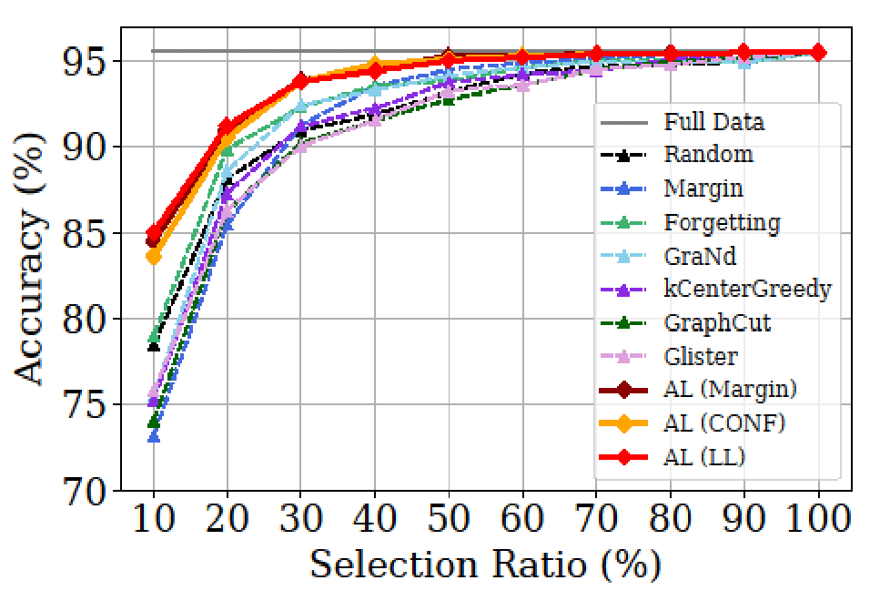

|
Dongmin Park
Email: dongminparkxkxkxk@kaist.ac.kr Phone: +82 o1o-8q37-8424 |
Sep 2022: Papers on 'Active Learning with Open-set Label Noise' and 'Data Subset Selection' accepted at NeurIPS 2022.
Sep 2022: A Paper on 'Trajectory Reconstruction for Digital Contact Tracing' accepted at ICDM 2022.
Sep 2022: Received a 'Nuri Ph.D. Scholarship', The Korea Scholarship Foundation of Future Leaders ($18,000 + 2-year full scholarship)
August 2022: Received an 'Outstanding Reviewer Award' at ICML 2022.
July 2022: Started 'Deep Learning Research Internship' at KRAFTON AI Lab.
Jun 2022: A survey paper on 'Learning from Noisy Labels' accepted at TNNLS 2022.
Jan 2022: A paper on 'Online Recommender System' accepted at AAAI 2022.
Publications Google scholar profile| D. Park, Y. Shin, J. Bang, Y. Lee, H. Song, JG. Lee. Meta-Query-Net: Resolving Purity-Informativeness Dilemma in Open-set Active Learning. Annual Conference on Neural Information Processing Systems (NeurIPS) 2022. [pdf] [code] | |
|  | D. Park, D. Papailiopoulos, K. Lee. Active Learning is a Strong Baseline for Data Subset Selection. Has it Trained Yet? Workshop on Annual Conference on Neural Information Processing Systems (NeurIPS, Workshop) 2022. [pdf] [code] |

|
D. Park, J. Kang, H. Song, S. Yoon, JG Lee. Multi-view POI-level Cellular Trajectory Reconstruction for Digital Contact Tracing of Infectious Diseases. International Conference on Data Minig (ICDM) 2022. |

|
H. Song, M. Kim, D. Park, Y. Shin, JG. Lee. Learning from Noisy Labels with Deep Neural Networks: A Survey. IEEE Transactions on Neural Networks and Learning Systems (TNNLS) 2022. The most cited survey paper on handling noisy labels with DNNs. [pdf] [code] |

|
M. Kim, H. Song, Y. Shin, D. Park, K. Shin, JG. Lee. Meta-Learning for Online Update of Recommender Systems. The AAAI Conference on Artificial Intelligence (AAAI) 2022. [pdf] |

|
D. Park, H. Song, M. Kim, JG. Lee. Task-Agnostic Undesirable Feature Deactivation Using Out-of-Distribution Data. Annual Conference on Neural Information Processing Systems (NeurIPS) 2021. [pdf] [code] |

|
H. Song, M. Kim, D. Park, Y. Shin, JG. Lee. Robust Learning by Self-Transition for Handling Noisy Labels. International Conference on Knowledge Discovery and Data Mining (KDD) 2021. Oral Presentation. [pdf] |

|
M. Kim, J. Kang, Dim, H. Song, H. Min, Y. Nam, D. Park, JG. Lee. Hi-COVIDNet: Deep Learning Approach to Predict Inbound COVID-19 Patients and Case Study in South Korea . International Conference on Knowledge Discovery and Data Mining (KDD) 2020. Oral Presentation. [pdf] [code] |

|
H. Song, M. Kim, D. Park, JG. Lee. How Does Early Stopping Help Generalization against Label Noise? . International Conference on Machine Learning (ICML, Workshop) 2020. [pdf] [code] |

|
D. Park, H. Song, M. Kim, JG. Lee. TRAP: Two-level Regularized Autoencoder-based Embedding for Power-law Distributed Data. TheWebConf (WWW) 2020. Oral Presentation. [pdf] [code] |
| D. Park, S. Yoon, H. Song, JG. Lee. MLAT: Metric Learning for kNN in Streaming Time Series. International Conference on Knowledge Discovery and Data Mining (KDD, Workshop) 2019. [pdf] |
Services
Reviewer for ICML, NeurIPS, CVPR, KDD, TNNLS since 2021
Awards Outstanding Reviewer Award, International Conference on Machine Learning (ICML), 2022 Nuri Ph.D. Scholarship, The Korea Scholarship Foundation of Future Leaders ($18,000 + 2-year full scholarship) Best Poster Awards, KAIST AI Workshop (Sponsors: NAVER, LG AI, SKT), 2021 Qualcomm Innovation Awards, 2019 ($5,000)
© 2022 Dongmin Park. Thanks Dr. Hwanjun Song and Dr. Deqing Sun for the template.